Home / Past papers / MLP End Term / this paper
IIT M DIPLOMA ET1 EXAM QPD1 S2 30 Apr 2023 - 30 Apr 2023
- sklearn.datasets.make_clusters()
- sklearn.datasets.make_centers()
- sklearn.datasets.make_normal_clusters()
- sklearn.datasets.make_blobs()
- Some columns have values only between 0 and 1
- The data is divided into multiple types of files i.e. html, csv, tsv, etc.
- The data has only numbers in all the columns.
- R2 score is always positive and it may go up to infinity.
- R2 score is always positive, but it ranges between 0 and 1 only.
- R2 score can be negative. That happens if our model is worse than the meanmodel.
- R2 score can be negative. That happens if the mean model is worse than ourmodel.
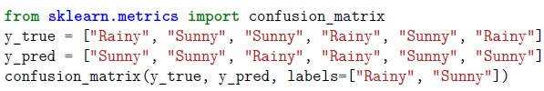
Which options represent the output of the following code block?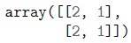
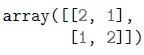
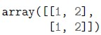
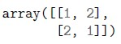
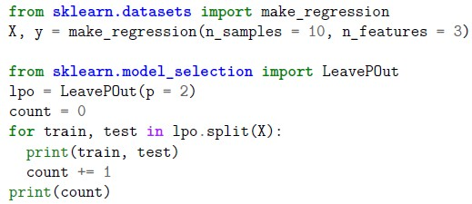
Consider the following code block: What will be the value of the ‘count’?- 20
- 30
- 45
- 15
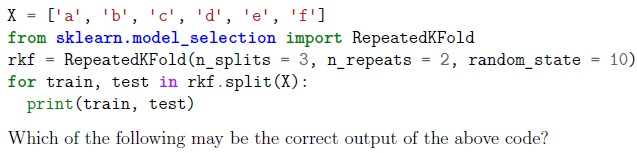
Consider the following code block: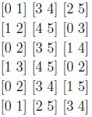
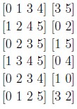
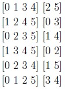
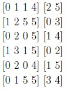
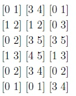
- L1-ratio in elasticnet
- Pruning parameter in a decision tree
- Learning rate in SGDRegressor
- All of these

- DecisionTreeClassifier
- RandomForestRegressor
- LogisticRegressor
- SGDRegressor
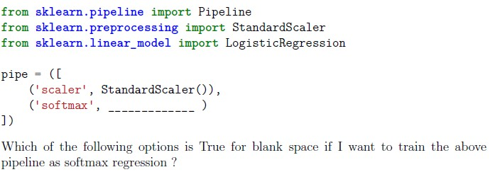
Consider the following code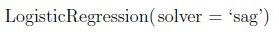
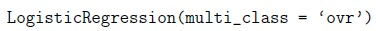
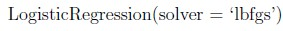
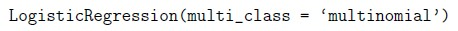
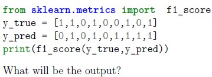
Consider the following code:- 0.66
- 0.72
- 0.80
- 1.00
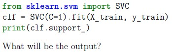
Which of the following are correct about sklearn.svm.SVC:- It will print number of support vectors
- It will print an array of support vectors
- It will print an array of probabilities representing distance from decisionboundary with each data point.
- It will print indices of the support vectors from the training set.
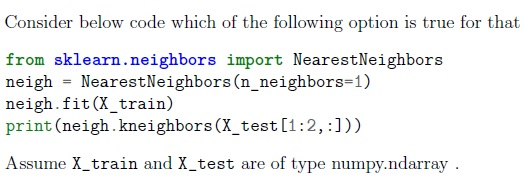
- It will print nearest neighbours from the test point
- It will print indices of and distances to the neighbouring points (in training set)from test point
- It will print indices, distance and nearest training point from the test point
- It will throw an error
- Pipeline
- ColumnTransformer
- FeatureUnion
- All of these
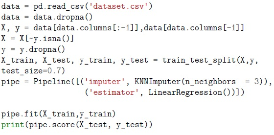
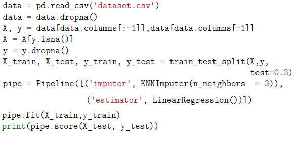
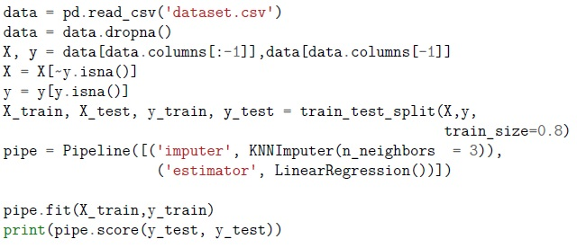
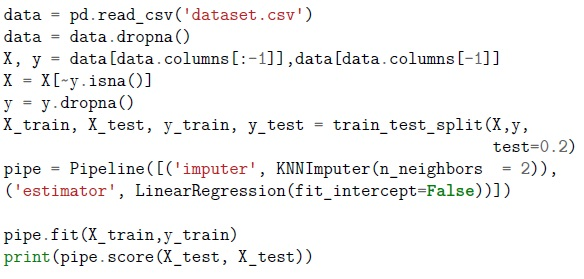
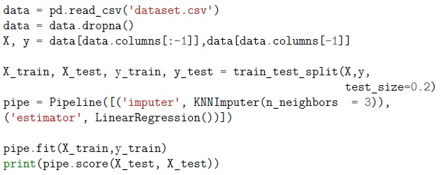
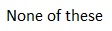
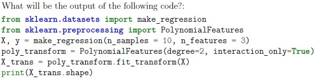
- (10, 3)
- (10, 7)
- (10, 8)
- (10, 10)
- (10, 11)
- 1 and 4
- 1 and 2
- 2 and 3
- 3 and 4
- multi-label and multiclass problem.
- multi-label and binary class problem.
- multiclass problem.
- binary class single label problem.
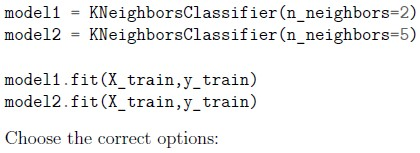
Consider following code snippets, assuming necessary imports.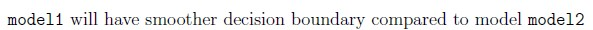
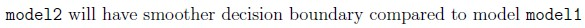
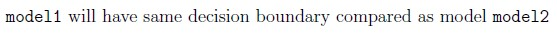
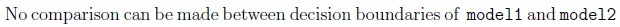
- For high values of gamma, the points need to be very close to each other inorder to be considered in the same class
- For low values of gamma, the points need to be very close to each other inorder to be considered in the same class
- Gamma doesn’t affect the SVM model at all
- None of these
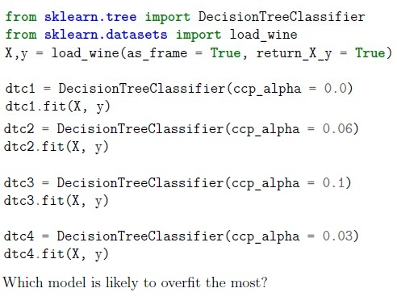
Consider the following code:- dtc1
- dtc2
- dtc3
- dtc4
 Following is the code to tune the n_estimators parameter of a Bagging Classifier model.
Following is the code to tune the n_estimators parameter of a Bagging Classifier model. 


 Consider the following code. How many DecisionTreeClassifier models will be trained internally?
Consider the following code. How many DecisionTreeClassifier models will be trained internally? - 20
- 200
- 8
- 150
- 15
- 80
 Consider two classifiers as shown in the following block of code:
Consider two classifiers as shown in the following block of code: - depth(clf1) ≥ depth(clf2)
- depth(clf1) ≤ depth(clf2)
- depth(clf1) = depth(clf2)
- Insufficient Information
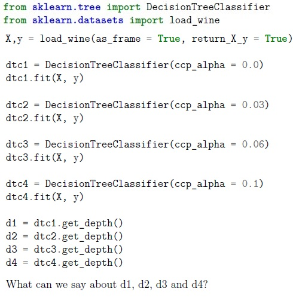
Consider the following code:- d1 < d2 < d3 < d4
- d1 ≤ d2 ≤ d3 ≤ d4
- d1 > d2 > d3 > d4
- d1 ≥ d2 ≥ d3 ≥ d4
- Always True
- Always False
- True, sometimes
 Suppose that we use k-means clustering for a dataset having 100 samples. The initial centroids for k clusters can be initialized in multiple ways. One such as way is shown below
Suppose that we use k-means clustering for a dataset having 100 samples. The initial centroids for k clusters can be initialized in multiple ways. One such as way is shown below - 20 centroids are randomly initialized 10 times
- 10 centroids are randomly initialized 20 times
- 20 samples in the dataset are selected as initialization point such that they areat least 10 units away from each other
- 10 samples in the dataset are selected as initialization point such that they areat least 20 units away from each other
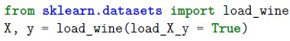
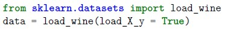
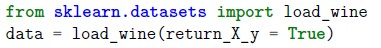
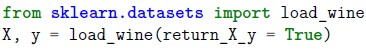
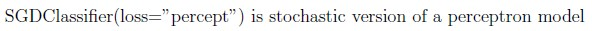
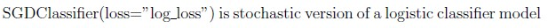
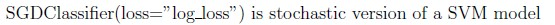
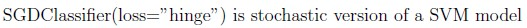
- LinearRegression
- DecisionTree
- SVM
- BinomialNaiveBayes
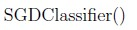
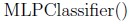
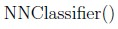
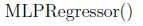
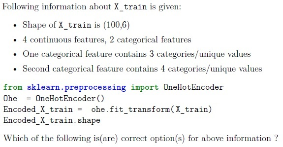
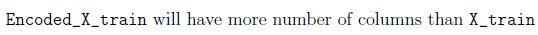
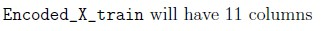
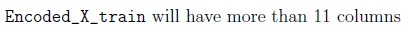
- Drop a Feature with many missing values
- Drop a feature containing data with high standard deviation
- Use SelectKBest or SelectKPercentile methods
- Drop a feature which has high correlation with target variable
- Number of samples at node N = 15. If it is split, it will result in 9 nodes in theleft child and 6 nodes in the right child.
- Number of samples at node N = 5. If it is split, it will result in 4 nodes in the leftchild and 2 nodes in the right child.
- Number of samples at node N = 7. If it is split, it will result in 4 nodes in the leftchild and 3 nodes in the right child.
- Number of samples at node N = 12. If it is split, it will result in 3 nodes in theleft child and 9 nodes in the right child.
 The code given below attempts to find the clusters in the dataset, X using the K-means algorithm.
The code given below attempts to find the clusters in the dataset, X using the K-means algorithm. - The code attempts to find 2 clusters in the given dataset
- The dataset X can be visualized in the Euclidean space
- The code raises an error upon execution
- The code gets executed without an error upon execution
 The following line of code creates a neural network (assume necessary imports) Select the correct statements from the following list of statements
The following line of code creates a neural network (assume necessary imports) Select the correct statements from the following list of statements- The neural network contains 3 hidden layers with 5 neurons in each hiddenlayer
- The neural network contains 5 hidden layers with 3 neurons in each hiddenlayer
- The neural network contains 2 hidden layers with 5 neurons in the secondhidden layer
- The neural network contains 2 hidden layers with 3 neurons in the first hiddenlayer
- None of the given options are correct
Answer key
- Q1 (MCQ, 2 marks): D
- Q2 (MCQ, 2 marks): B
- Q3 (MCQ, 2 marks): C
- Q4 (MCQ, 2 marks): C
- Q5 (MCQ, 2 marks): C
- Q6 (MCQ, 2 marks): C
- Q7 (MCQ, 2 marks): D
- Q8 (MCQ, 2 marks): D
- Q9 (MCQ, 2 marks): D
- Q10 (MCQ, 2 marks): B
- Q11 (MCQ, 2 marks): B
- Q12 (MCQ, 2 marks): B
- Q13 (MCQ, 3 marks): A
- Q14 (MCQ, 3 marks): A
- Q15 (MCQ, 3 marks): B
- Q16 (MCQ, 3 marks): A
- Q17 (MCQ, 3 marks): A
- Q18 (MCQ, 3 marks): A
- Q19 (MCQ, 3 marks): A
- Q20 (MCQ, 3 marks): A
- Q21 (MCQ, 3 marks): C
- Q22 (MCQ, 4 marks): F
- Q23 (MCQ, 4 marks): A
- Q24 (MCQ, 4 marks): D
- Q25 (MCQ, 4 marks): A
- Q26 (MCQ, 4 marks): A
- Q27 (MSQ, 2 marks): A, B
- Q28 (MSQ, 2 marks): B, D
- Q29 (MSQ, 2 marks): A, C
- Q30 (MSQ, 2 marks): B, D
- Q31 (MSQ, 3 marks): A, C
- Q32 (MSQ, 3 marks): A, C
- Q33 (MSQ, 4 marks): B, C, D
- Q34 (MSQ, 4 marks): B, C
- Q35 (MSQ, 4 marks): C, D
- Q36 (SA, 3 marks): 60
Concepts this paper tests
Auto-generated summary from the source site. Handy as a checklist; the lessons above explain each idea from scratch.
Here’s a structured summary of core topics, concepts, principles, and equations essential for the "Diploma Level: Machine Learning Practice" exam, along with Mermaid knowledge graphs to visualize relationships.
1. Core Topics & Concepts
A. Data Preprocessing
Why Preprocess?
- Handle missing values, scale features, encode categorical variables, split data, and handle imbalanced datasets.
Key Methods:
train_test_split(e.g.,test_size=0.3for 70-30 split).StandardScaler/MinMaxScalerfor feature scaling.OneHotEncoderfor categorical features (e.g., 3 categories → 3 columns).KNNImputerfor missing values (e.g.,n_neighbors=3).Pipelineto chain transformations and estimators.
Cross-Validation:
LeavePOut(p=2): GeneratesC(n_samples, p)splits (e.g., forn_samples=10,p=2→ 45 splits).RepeatedKFold(n_splits=3, n_repeats=2): Repeats K-Foldn_repeatstimes.GridSearchCV: Exhaustive search over hyperparameters (e.g.,cv=3for 3-fold CV).
B. Supervised Learning
Classification:
Metrics:
- Confusion Matrix: TP, TN, FP, FN (e.g.,
confusion_matrix(y_true, y_pred)). - F1-Score: Harmonic mean of precision/recall. Formula:
- Confusion Matrix: TP, TN, FP, FN (e.g.,
- R² Score: For regression, but can be negative if the model is worse than the mean model.
Algorithms:
Logistic Regression:
multi_class='multinomial'+solver='lbfgs'for softmax regression.partial_fitfor online learning (incremental updates).
Decision Trees:
Hyperparameters:
min_samples_split(default=2),min_samples_leaf(default=1).ccp_alpha: Higher values → more pruning → shallower trees.
- Depth Comparison: Lower
min_samples_split/min_samples_leaf→ deeper trees.
SVM (SVC):
support_: Indices of support vectors.gamma: Highgamma→ tighter decision boundary (points must be very close to be in the same class).
k-NN:
- Smaller
n_neighbors→ more complex (less smooth) decision boundary.
- Smaller
Neural Networks:
MLPClassifier/MLPRegressorin sklearn (e.g.,hidden_layer_sizes=(3,5)→ 2 hidden layers with 3 and 5 neurons).
SGDClassifier:
- Supports
loss="perceptron",loss="log"(logistic),loss="hinge"(SVM). partial_fitfor online learning.
- Supports
Regression:
- Linear Regression:
LinearRegression(fit_intercept=True). - Polynomial Features:
PolynomialFeatures(degree=2, interaction_only=True)generates interaction terms (e.g., for 3 features → 6 terms: original + 3 interactions).
- Linear Regression:
C. Unsupervised Learning
K-Means Clustering:
init='random': Randomly initialize centroids.n_init=10: Run algorithm 10 times with different centroids.- Convergence: Always converges (inertia ≥ 0), but may not reach zero inertia unless
K = n_samples. - Error Cases: If
n_clusters > n_samples, it raises an error.
D. Model Evaluation & Hyperparameter Tuning
Hyperparameters vs. Parameters:
- Hyperparameters (set before training):
C(SVM),n_estimators(Random Forest),learning_rate(SGD). - Parameters (learned during training): weights in linear regression.
- Hyperparameters (set before training):
GridSearchCV:
- Searches over all combinations of hyperparameters (e.g.,
param_gridwithmax_depthandmin_samples_split). - Example: For
param_grid = [{'A': [1,2]}, {'B': [3,4]}], total combinations = 2 (A) + 2 (B) = 4 (not 2×2, since separate dicts). - Naming in Pipelines: Use
stepname__param(e.g.,bc__n_estimatorsforBaggingClassifierin a pipeline).
- Searches over all combinations of hyperparameters (e.g.,
E. Special Cases
- Multi-Label Classification: Each sample can have multiple labels (e.g., image with dogs, birds, trees).
- Imbalanced Data: Use metrics like F1-score (not accuracy).
Feature Selection:
Drop features with:
- Many missing values.
- Low variance or high correlation with other features.
- Use
SelectKBestorSelectPercentile.
2. Key Equations
| Concept | Equation |
|---|---|
| R² Score | |
| F1-Score | |
| Polynomial Features | For degree=2, interaction_only=True: (e.g., 3 features → 6 terms). |
| K-Means Inertia | |
| SGD Update (Perceptron) |
Graph 2: Unsupervised Learning (K-Means)
Graph 3: Model Evaluation & Hyperparameter Tuning
Graph 4: Decision Trees & Pruning
Graph 5: Data Preprocessing Pipeline
4. Common Pitfalls & Tips
Confusion Matrix:
- Rows = True labels, Columns = Predicted labels.
Example:
y_true = ["Rainy", "Sunny", "Sunny", "Rainy", "Sunny", "Rainy"] y_pred = ["Sunny", "Sunny", "Rainy", "Rainy", "Sunny", "Sunny"]Output:
[[1, 2], [2, 1]](Option C).
Polynomial Features:
interaction_only=True→ Only interaction terms (no squares).- For
n_features=3,degree=2→ 6 features (original 3 + 3 interactions).
SGDClassifier:
loss="perceptron"→ Perceptron.loss="log"→ Logistic regression.loss="hinge"→ Linear SVM.
K-Means:
- If
n_clusters > n_samples, it raises an error. init='random'initializes centroids randomlyn_inittimes.
- If
Hyperparameter Tuning:
- In
GridSearchCV, separate dictionaries inparam_gridare treated as separate grids (not combined). - Example:
param_grid = [{'A': [1,2]}, {'B': [3,4]}]→ 2 + 2 = 4 combinations (not 4 total).
- In
Pipelines:
- Use
stepname__paramfor hyperparameter tuning (e.g.,bc__n_estimators).
- Use
R² Score:
- Can be negative if the model is worse than the horizontal line (mean predictor).
Neural Networks in sklearn:
MLPClassifier/MLPRegressor(notNNClassifier).hidden_layer_sizes=(3,5)→ 2 hidden layers (3 neurons, then 5 neurons).